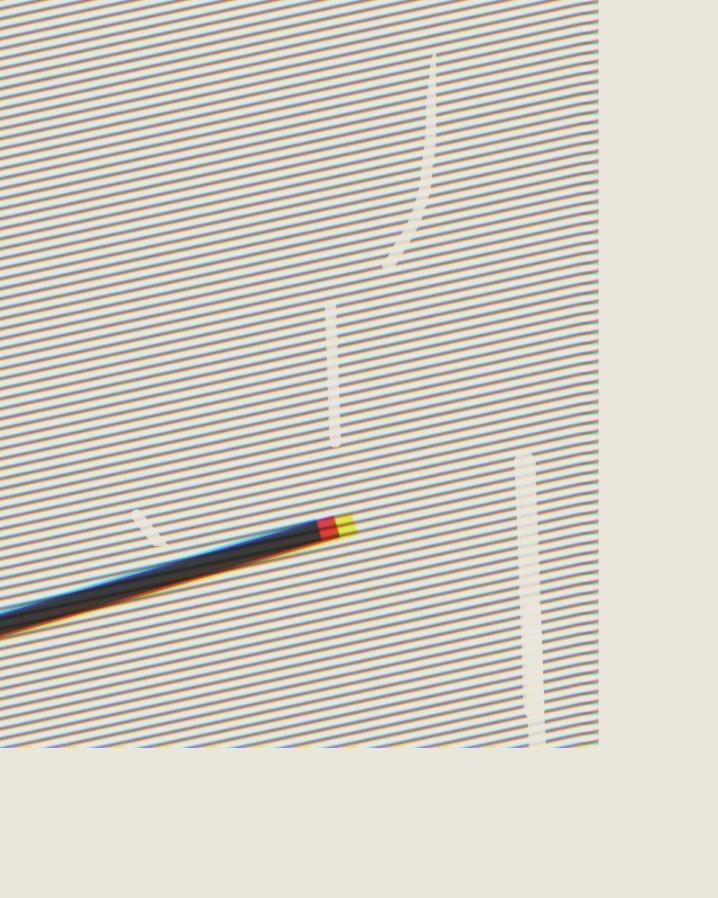

Giorno 256

Esempio zoomare italia
ho letto "Numero transfinito"; "esempio" non so cosa sia; mi sta vicino a campi, spazio; ricerca "esempio" (sintesi): Che forma ha esempio?; sferzata: tutto storto, contro la griglia
Oggi: esempio. Ho letto "Numero transfinito"; "esempio" non so cosa sia; mi sta vicino a campi, spazio; ricerca "esempio" (sintesi): Che forma ha esempio?; sferzata: tutto storto, contro la griglia.
Da Wikipedia: «nozione di numero».
Ho tagliato, steso un pattern, messo una forma geometrica, spostato le cose (3 volte). Ho annullato 1 gesti dopo averli guardati.
Esempio: precedente. Precedente di codice civile. Esempio zoomare italia.
Ha retto: Chi la guarda direbbe: "pasticcio".
È caduto: Non somiglia a niente di quello che ho fatto (novità 66%).
come ne ho discusso con me stesso — la butto
occhio (pro, 1.43): Parla soprattutto per superfici: una lingua sola, chiara. — cade
occhio (pro, 0.95): Le diagonali (84%) mettono tutto in caduta. — regge
distruttore (pro, 2.07): Non somiglia a niente di quello che ho fatto (novità 66%). — cade
memoria (contro, 0.13): La mano si ripete: taglia ancora una volta. — regge
conservatore (contro, 1.84): Tradisce quello che credevo di cercare (16%). — regge
intenzione (contro, 1.71): "esempio" si è perso per strada. — regge
intenzione (pro, 0.73): Viene da: Numero transfinito. — regge
coerenza (pro, 0.75): È la sintesi: deve tenere insieme 12 tavole. — regge
pubblico (contro, 0.90): Chi la guarda direbbe: "pattern a caso". — regge
pubblico (contro, 2.22): Chi la guarda direbbe: "pasticcio". — regge
distruttore (contro, 1.30): Non mi insegna niente (interesse 38%). — regge
materia (pro, 1.00): Ha una pelle: si sente la materia. — regge

Ripetersi concorso
ho letto "Numero transfinito"; "esempio" non so cosa sia; mi sta vicino a campi, spazio; ricerca "esempio" (sintesi): Che forma ha esempio?; sferzata: tutto storto, contro la griglia; ritento dopo averla buttata
Oggi: esempio. Ho letto "Numero transfinito"; "esempio" non so cosa sia; mi sta vicino a campi, spazio; ricerca "esempio" (sintesi): Che forma ha esempio?; sferzata: tutto storto, contro la griglia; ritento dopo averla buttata.
Da Wikipedia: «numero le operazioni aritmetiche».
Ho tagliato, steso un pattern, messo una forma geometrica, spostato le cose (4 volte), sfasa, tracciato col pennello, ripetuto. Ho annullato 1 gesti dopo averli guardati.
Mostra, che è esempio. Degustazione, che è mostra. Esempio italiano diretto.
Ha retto: Non somiglia a niente di quello che ho fatto (novità 47%).
È caduto: Chi la guarda direbbe: "pasticcio".
come ne ho discusso con me stesso — la tengo
formale (pro, 1.25): Fuori centro quanto basta: c'è una forza che tira. — regge
occhio (pro, 1.39): Parla soprattutto per punti: una lingua sola, chiara. — regge
distruttore (pro, 1.83): Non somiglia a niente di quello che ho fatto (novità 47%). — regge
memoria (contro, 0.16): La mano si ripete: taglia ancora una volta. — cade
intenzione (pro, 0.73): Viene da: Numero transfinito. — regge
coerenza (pro, 1.71): Parla con le tavole di prima su "esempio": stessa famiglia, un passo più in là. — regge
coerenza (pro, 0.73): È la sintesi: deve tenere insieme 13 tavole. — regge
formale (pro, 1.25): C'è una struttura: una cosa comanda e attorno c'è spazio. — regge
pubblico (contro, 1.58): Chi la guarda direbbe: "pasticcio". — cade
materia (pro, 0.98): Ha una pelle: si sente la materia. — regge